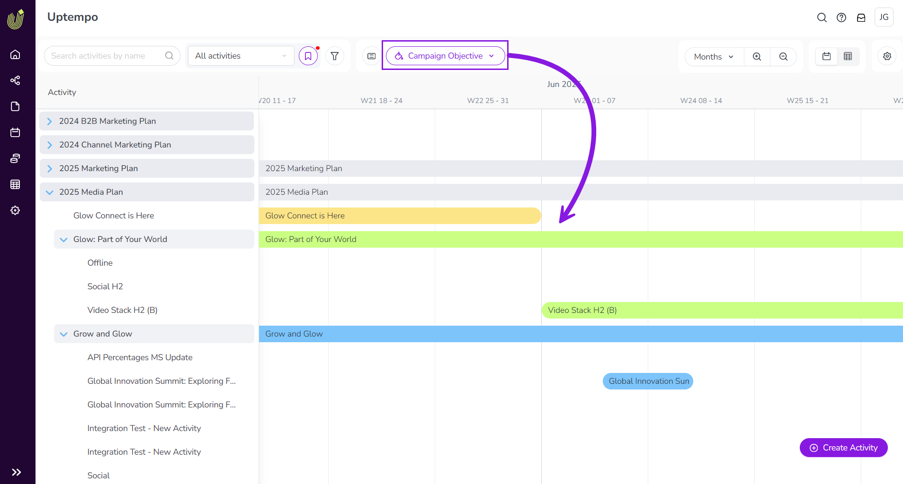

Color-code Timeline activity bars
In the Timeline display mode, marketing activities are represented by horizontal bars. To make it easier to identify activities at a glance, you can color-code the activity bars based on which option of a specified Drop-Down List attribute is set on each activity.
When an attribute has been set up for color-coding, it appears as an option in the  Select Color-Coding menu in the toolbar on the Timeline.
Select Color-Coding menu in the toolbar on the Timeline.
After you select an attribute from the  Select Color-Coding menu, each activity bar is displayed in a predetermined color based on the attribute option set on that activity.
Select Color-Coding menu, each activity bar is displayed in a predetermined color based on the attribute option set on that activity.
- Example
In this example, the Campaign Objective attribute has color-coding enabled, with the following colors assigned to each attribute value:
Sales Enablement: Green
Reputation: Blue
Demand Creation: Yellow
After you select the attribute Campaign Objective in the
 Select Color-Coding menu, the activity bars for activities with this attribute are displayed in the specified colors according to the attribute value that's assigned to them:
Select Color-Coding menu, the activity bars for activities with this attribute are displayed in the specified colors according to the attribute value that's assigned to them:The activity bar for the activity " Glow: Part of Your World " is displayed in green, because its Campaign Objective attribute is set to Sales Enablement.
The activity bar for the activity " Grow and Glow " is displayed in blue, because its Campaign Objective attribute is set to Reputation.
The activity bar for the activity " Up 'n Glow " is displayed in yellow, because its Campaign Objective attribute is set to Demand Creation.
The activity bar for the parent activity " 2025 Media Plan " is displayed in grey, because it either does not have the Campaign Objective attribute, or does not have a value for that attribute.

Color-code activity bars by attribute
In the Activities section, make sure the
 Timeline display mode is selected.
Timeline display mode is selected.In the table controls, click
Select Color-Coding. The Color by menu panel opens.Use the Color by menu to select the attribute you want to use to color-code the activity bars:

The activity bars in the Timeline change color based on the attribute option set on them for the selected attribute: 
{kind=link}
To remove the attribute-based color-coding again, select the Default color option from the Color by menu.